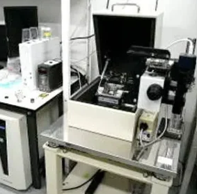
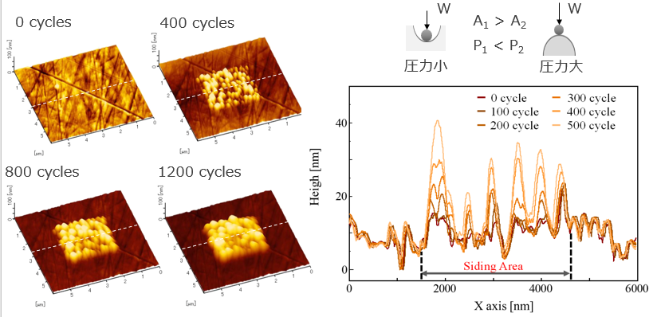
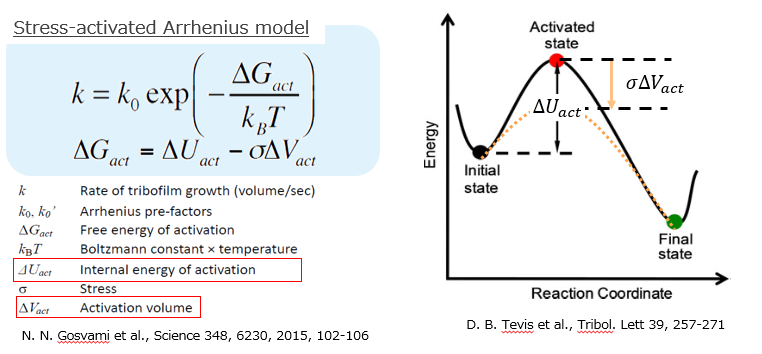
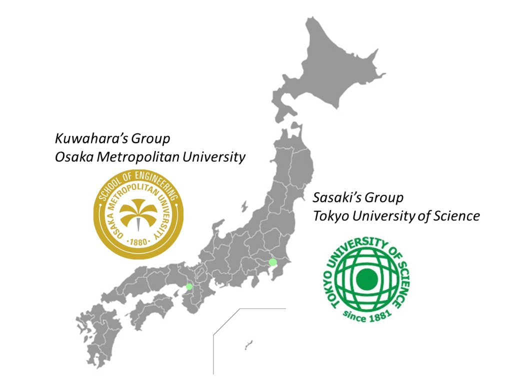
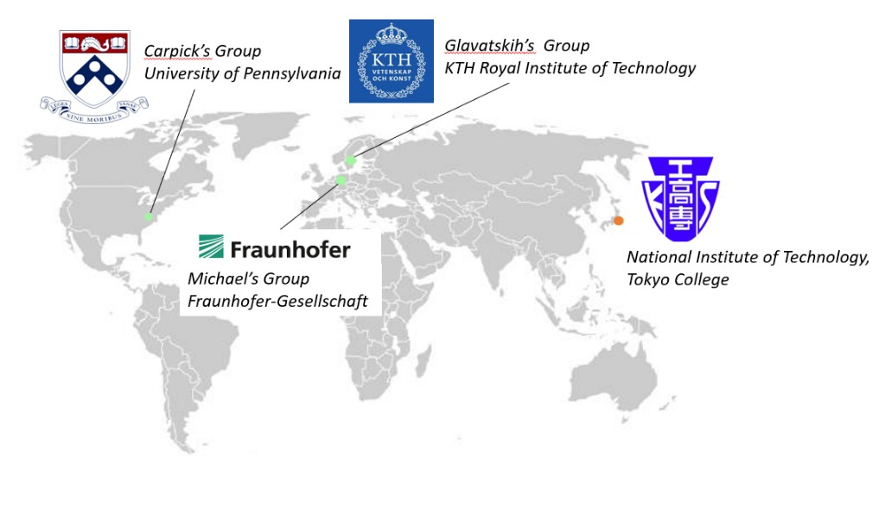

AFMを用いたナノスケール界面計測
原子間力顕微鏡を用いて，固体表面，吸着膜，潤滑油中の固液界面における分子構造，摩擦力，凝着力，粘弾性的応答を評価します．マクロな摩擦・摩耗現象の背後にあるナノスケールの界面構造と力学応答の関係を明らかにすることを目指しています．
摩擦・摩耗・潤滑を，ナノ界面からマクロ現象まで多角的に研究します。
トライボロジー，原子間力顕微鏡，トライボケミストリー，機械要素，潤滑油添加剤，メカノケミストリー，トライボケミカル反応，その場観察

原子間力顕微鏡を用いて，固体表面，吸着膜，潤滑油中の固液界面における分子構造，摩擦力，凝着力，粘弾性的応答を評価します．マクロな摩擦・摩耗現象の背後にあるナノスケールの界面構造と力学応答の関係を明らかにすることを目指しています．

ZDDP，MoDTC，WDTC，イオン液体などの潤滑油添加剤を対象に，摩擦界面で形成される反応膜の構造・化学状態・摩擦特性を調べています．摩擦低減，耐摩耗性向上，省エネルギー化に寄与する添加剤反応膜の形成機構を理解し，次世代潤滑油設計に資する知見の獲得を目指します．

摩擦によって誘起される化学反応，表面改質，反応膜形成，摩耗進展を対象に，実験と解析を組み合わせて研究しています．接触圧力，温度，摺動速度，雰囲気，潤滑油組成が界面反応と摩擦・摩耗特性に及ぼす影響を明らかにします．
国内外の大学・研究機関・研究会と学術連携を行うほか，東京工業高等専門学校の産学公連携制度に基づき，企業・団体等との共同研究・受託研究（委託研究）も受け付けています。
本研究室では，東京高専の産学公連携の枠組みのもと，トライボロジー・潤滑・界面計測に関する課題について，共同研究および受託研究のご相談を承ります。東京高専では産業技術センターを中心に産学連携を推進しており，技術相談（初回無料）からのお問い合わせも可能です。

ほか：名古屋大学，添加剤技術研究会（幹事）
